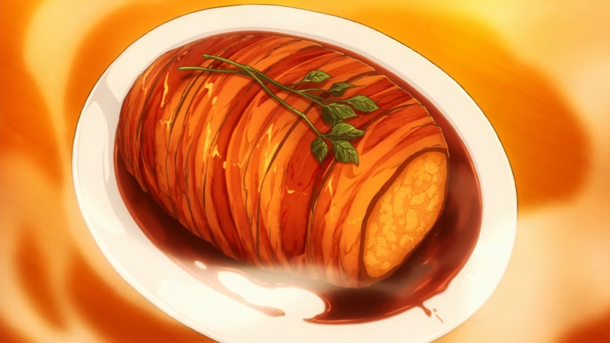

This is Sōma's innovative dish which is served to repel the vicious urban residential planner, Yaeko Minegasaki from destroying Restaurant Yukihira. Even when after all the meat materials were sabotaged in his kitchen, Sōma managed to turn the tides by using some of the groceries as his ingredients to create artificial meat.
Recipe
- 6 white potatoes
- 3 Eringi mushrooms
- 1 large white onion, or 2 medium white onions.
- 1 sprig of rosemary.
- Butter. I suggest 2 tablespoons (30ml), but you could always used a bit more.
- 2 packs of thick-cut bacon.
- 1 cup, or 250ml of red wine. We used a Pinot Noir since its preferable for cooking.
- 1/4 cup, or 60ml of sake. Any sake that is labeled as “sweet” should do.
- 2 tbs, or 30ml of soy sauce.
- 1 spring of parsley or any garnish.
How to Cook
- Peel the Potatoes
- Slice the Potatoes
- Chop the Mushrooms and Onions into Equally-sized Brunoise (small 5-6cm cubes)
- Steam the Potatoes
- Pan Fry the Onions and Mushrooms
- Mash the Potatoes
- Combine the Onion and Mushroom Mix with the Potato Mash
- Pick the Rosemary
- Add the Salt
- Form the Fake Roast
- Wrap the Roast in Bacon
- Tie the Roast
- Bake in the Oven
- Boil the Wine In the Frying Pan
- Add the Butter, Sake, and Soy Sauce to the Wine
- Remove the Twine and the Rosemary
- Pour the Sauce on the Roast
- Add the Garnish
- Serve
Return to top
Return to main page